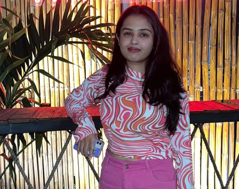

Yashika Jain
A fervent navigator of the digital frontier
Career Objective
To excel in the field of web development and design, leveraging my creativity and technical skills to deliver innovative solutions.
Key Skills
- Web Design
- HTML/CSS
- JavaScript
Professional Experience
2nd Year Undergraduate Student
Looking for Opportunities
Currently pursuing a degree in Computer Science, with a focus on web development and design. Eager to apply my skills in a real-world setting and contribute to innovative projects.
Education
Bachelor of Computer Science with specialization in Data Science
Shri Ramdeobab College of Engineering and Management
Graduation by 2026
Personal Interests
- Web Design
- Traveling
- Photography
- Reading